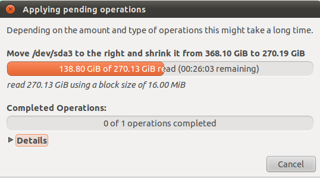
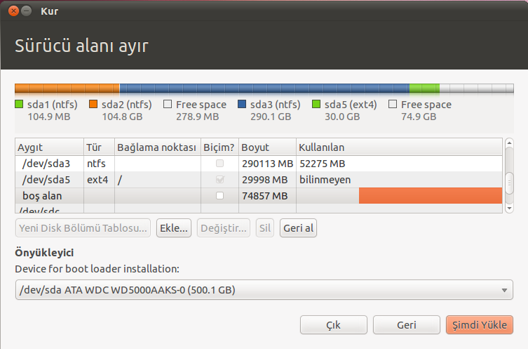
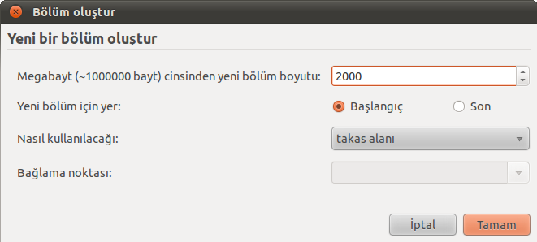
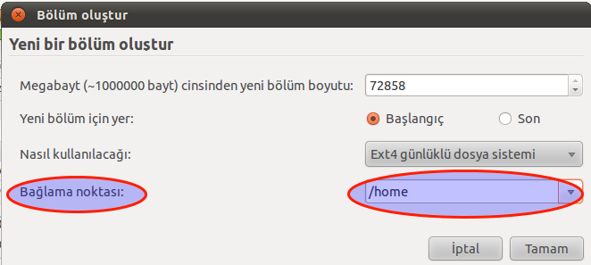

Ubuntu’yu denemek isteyen ve Windows’undan da vazgeçemeyen kullanıcılar bilgilerim kaybolur endişesiyle bilgisayarına kurmaktan çekinirler. İnceleyeceğimiz bu yazı ile her iki işletim sisteminin de bilgisayarımızda yan yana kalmasını sağlayacağız.
Wubi adlı araçla Windows’un içine Ubuntu işletim sistemini kurmak mümkündür ama sistem kararlılığı açısından bu çok sağlıklı olmayabilir. Daha dengeli bir işletim sistemi için kendi disk biçiminde kullanmak en iyisidir. Bu yazıda Gparted disk bölümlendirme aracı ile Windows kurulu bilgisayarda Linux için boş disk bölümü oluşturarak kurulum yapmayı öğreneceğiz.
Her şeyden önce elimizde Ubuntu’nun kendi sitesinden indirilmiş ve uygun programla diske yazılmış Ubuntu CD’si olmalı. Bunu belirtmemdeki amaç bozuk veya yanlış çekilmiş Cd’ler boşa zaman harcamanıza neden olacaktır. İmaj dosyası yazdırma ile ilgili internette bol miktarda açıklayıcı belge bulabilirsiniz.
Elimizde düzgün çekilmiş çalışır durumda Ubuntu Cd’si olduğunu varsayarak ilk işlemimize başlıyoruz. Bilgisayarımıza Ubuntu Cd’sini takıyor ve bilgisayarımızı çalıştırıyoruz. Anakartın önyükleme(boot) ayarlarında açılış seçeneklerinde DVD-CD ROM sürücüsünün ilk açılış seçeneği olarak işaretlenmiş olması gerekir. Aksi takdirde Cd önyüklenemeyecek ve kurulum başlamayacaktır. Tüm bunların hazır olduğunu varsayarak devam ediyoruz.
Önyüklemenin ardından sizden kullanılacak dil seçeneği ve bu yapılan işlemin bir kurulum mu yoksa deneme mi olduğunu soracaktır. ‘‘Dene’’ diyerek sistemin kurulum yapmadan açılmasını sağlıyoruz. Karşımıza Ubuntu’nun basit kullanıcı dostu arayüzü gelecektir. Sistem -> Yönetim -> Gparted yolunu izleyerek veya ‘‘Alt+F2” tuş ikilisine basıldığında çıkan kutucuğa “Gparted” yazarak uygulamayı çalıştırıyoruz.

Resim1’de görüldüğü gibi disk bölümlerimizi gösteren bir tablo çıkacaktır. Bu tabloda 368 GB olarak görülen benim Windows yüklü bilgisayarımda ‘‘D’’ bölümü olarak bilinen yedeklerimin olduğu kısımdır. Burada Windows sistem dosyalarına ait hiçbir dosya yok. Rahatlıkla bu bölümü kullanabilirim. /dev/sda3 368GB görülen kısmın üzerine sağ tıklayarak çıkan menüden ‘‘Resize/Move’’ tıklıyorum.

Karşıma ne kadar disk alanı ayıracağımı belirleyeceğim ikinci bir pencere açılacaktır. ‘‘Free space following’’ yazan yerin kutucuğuna ben 100.000 mb gibi bir değer yazıyorum. İsterseniz bunu grafik ekranda görülen kutucuğun sağ köşesinden tıklama ile tutup kaydırarak da istediğimiz kadar alan ayırabilirsiniz.

'’Resize/Move’’ diyerek işlenecek alanı ayarlamış oluyoruz. Ayırdığımız bu 100 GB’lık bölüm işlem bittiğinde boş alan olarak görülecektir. Üst menüde bulunan onay(tik) işareti yeşil rengi almış olacaktır. Tıklayarak boş alanın yaratılmasını sabırla bekliyoruz. Sabırla diyorum çünkü bu işlem hayli uzun sürebilir. Windows dosya sistemine ait bütün dosyaların taşınması ve boş alan yaratılması işlemi birkaç saatten önce bitmeyecektir. Yapılan işlemin uzunluğunu bilgisayarınızın işlemcisi ve ram miktarı belirleyecektir.

Grafik ekranda işlemin durumunu görebileceksiniz. Diskinizde yaptığınız değişiklik bittiğinde yeni disk tablonuz aşağıdaki gibi olacaktır.
'’unallocated’’ diye görülen bölüm artık Ubuntu kurulumu için hazırdır. Gparted uygulamasını kapatıp ana ekrana dönerek kurulumu başlatabiliriz. Bütün bu işlemleri yaptığımızda bilgisayarımızdaki Windows işletim sistemine hiçbir zarar gelmediğini bilerek masaüstündeki ‘‘Install Ubuntu’’ yu çift tıklatarak kurulumu başlatıyoruz.
Klavye, dil gibi bölümleri geçtikten sonra en önemli bölüm olan disk bölümlendirme kısmına geliyoruz. Burada bizim seçeneğimiz ‘‘Bölümleri elle belirt’’ olmalı. Her ne kadar parantez içinde ‘‘Gelişmiş’’ yazsa da bu kısmın çok basit olduğunu göreceksiniz.

Karşımıza disk tablosu grafik ekranda tekrar çıkacaktır. Yapmamız gereken ayırdığımız 100 GB’lık bölümü bulup fare ile üzerini tıklamak olmalı. Bunu yaptığımız zaman ‘‘Ekle’’ düğmesi etkin hale gelecektir. ‘‘Ekle ‘’ düğmesine basarak bir sonraki pencerenin açılmasını sağlıyoruz.


Ubuntu için gerekli en fazla alan 30000 Mb olmalıdır. Bu alan Ubuntu’nun kurulması ve çalışması için oldukça büyük bir alandır. Ben bir çok programı ve uygulamaları yükleyeceğimi düşünerek bu denli büyük bir alan ayırıyorum. Siz bunu 20000 Mb olarak da ayarlayabilirsiniz.
Nasıl kullanılacağı kısmını Linux dosya sistemi olan Ext 4 olarak ayarlıyoruz.
Bağlanma noktası diye tabir edilen bölüm Windows kullanıcılarının ‘‘C’’ diye bildiği sistem dosyalarının kaydedildiği kısımdır. Linux işletim sisteminde bu ‘’/’’ ile ifade edilir.
Bu ayarları yaptıktan sonra ‘‘Tamam’’ düğmesine basarak ilk ekrana tekrar dönüyoruz.

Boş alanın ayarladığımız kadar kısmının gittiğini ve küçüldüğünü disk tablosunda görebiliyoruz. Bir önceki işlemde yaptığımız gibi tekrar ‘‘boş alan’’ kısmını tıklayıp ekle diyoruz. Şimdi yapacağımız işlem ise takas alanı oluşturmak. Bunu geçici ram olarak düşünebiliriz. Takas alanını oluşturmak bilgisayarınızın başarımını doğrudan etkileyeceğinden kesinlikle önerilir. Karşımızı açılan pencereden bu kısmın değerini 2000 Mb olarak belirliyoruz.
'’Nasıl kullanılacağı’’ bölümünü ‘‘Takas alanı’’ olarak belirliyoruz. ‘‘Tamam’’ diyerek tekrar ilk pencereye dönüyoruz.

Diğer kısımlarda yaptığımız gibi boş alanı tıklayıp ‘‘ekle’’ diyoruz. Şimdi yapacağımız işlem ise Windows işletim sisteminde ‘‘D’’ diye tabir edilen ve yedeklerimizi, müzik ve videolarımızı sakladığımız kısımdır. Format atılması gerektiğinde bu kısmı silmeyerek bilgilerimizi eski yerinde bulabiliriz.
Artık diskte herhangi bir Mb değişikliği yapmıyoruz.

Nasıl kullanılacağı bölümünü yine Linux dosya sistemi olan ‘‘Ext 4’’ olarak işaretliyoruz. Bağlanma noktası kısmını ‘‘/home’’ olarak işaretliyoruz. /home kısmı artık bizim yedeklerimizi ve önemli belgelerimizi saklayacağımız kısım. Tamam diyerek ilk pencereye tekrar dönüyoruz. Ubuntu kurulumu için gerekli bütün işlemleri böylece bitirmiş oluyoruz.

Disk tablosunda görülen kısımlar:
/dev/sda5 sistem dosyalarının yükleneceği bölüm (Windows’ta C ) /dev/sda6 Takas alanı /dev/sda/7 yedeklerin tutulacağı bölüm (Windows’ta D ) disk tablosunda görülen ‘‘ntfs’’ kısımlar Windows’a ait kısımlardır.
'’Şimdi Yükle’’ diyerek Ubuntu’yu kurmaya başlayabiliriz. Eğer gösterilen adımları sorunsuz ve eksiksiz olarak yaptıysanız Windows’un yanına Ubuntu işletim sistemini de kurmuş olacaksınız.
Kurulum bittiğinde bilgisayarınız açılırken sizden hangi işletim sistemi ile açılmasını istediğinizi soracaktır. Eger bir seçim yapmazsanız 10sn içinde bilgisayar Ubuntu işletim sistemi ile açılacaktır.
Bu yazımızda Windows işletim sisteminin yanına Ubuntu işletim sistemi kurmayı öğrendik. Artık çekinmeden Ubuntu Linux’u deneyebilirsiniz.